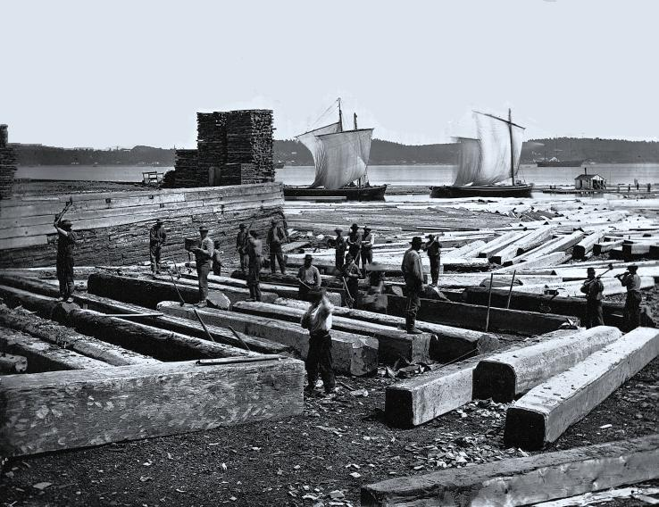

Butting square timber, Quebec City, QC, 1872. McCord Museum.[/caption] Michael Williams (2003) uses data from Arthur Lower (1973) to confirm Sven-Erik Åström's (1970) conclusion that mid-nineteenth century British North American timber exports to Britain were only a temporary "episode" in the long term dominance of the British timber market by Northern Europe. William's charts use Lower's data from 1790 to 1870 suggest a significant decline in British North American exports by the start of the 1870s. However, British import statistics from the Nineteenth Century and Twentieth Century House of Commons Sessional Papers confirm British North America and later Canada (without Newfoundland) remained major exporters of fir through to the early twentieth century. British North America did drop behind Sweden and Russia to become the third leading exporter to the United Kingdom in 1886, and they remained third through to 1906. The end of the tariffs do appear to have helped Northern European exporters after the 1860s, but this did not cause a collapse in exports from British North America.